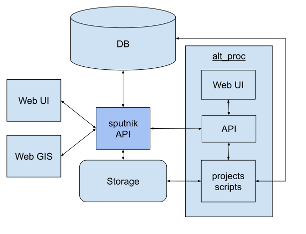

Архитектура

Sputnik API
Интерфейс взаимодействия с остальными частями Системы.
- получает команды от административного интерфейса
- формирует задания на обработку системе alt_proc
- формирует продукты для показа в Web GIS
DB (База Данных)
База Данных для хранения данных проектов
- данные проекта
- метаданные сцен
- метаданные продуктов
Storage (Хранилище)
Хранилище файлов
- исходных данных
- готовых продуктов
- объемных временных файлов
Web UI
Административных веб интерфейс
Web GIS
Картографическая часть веб интерфейса
alt_proc
Система alt_processing - Система автоматизации обработки Включает в себя API для взаимодействия и проекты, содержащие скрипты для выполнения обработки. Готовые продукты обработки записываются в Хранилище.